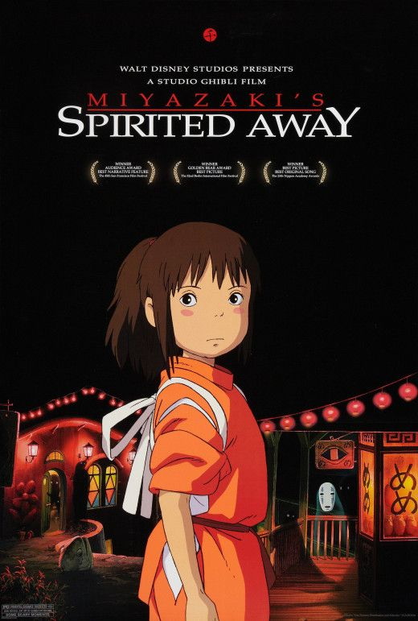
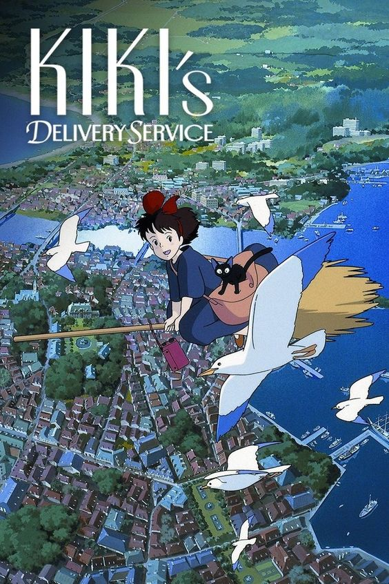
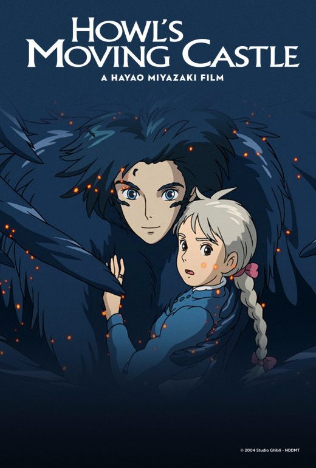
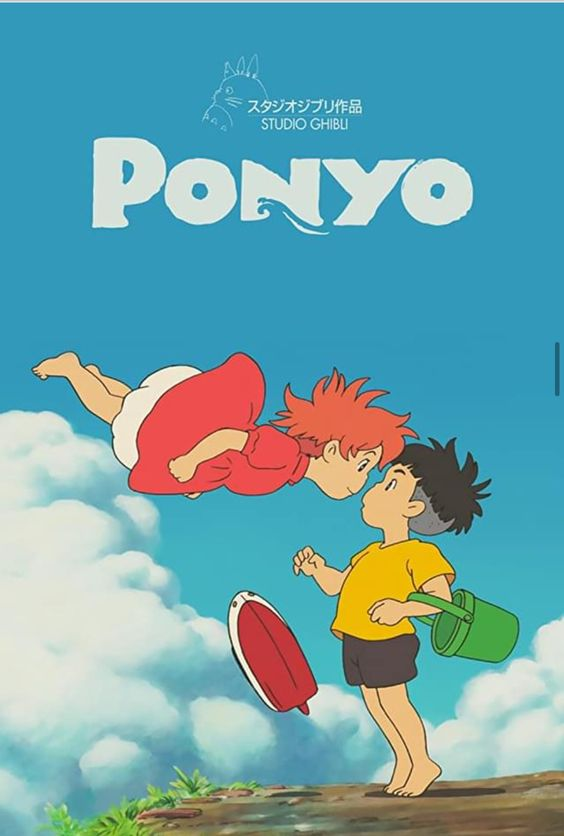
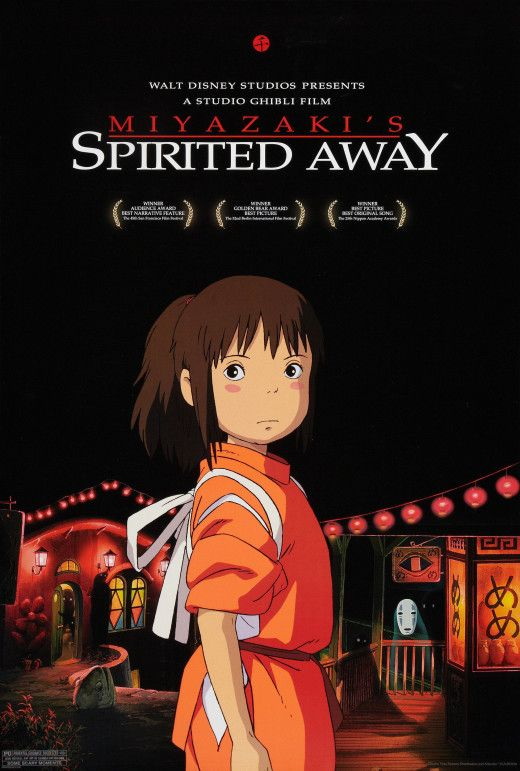
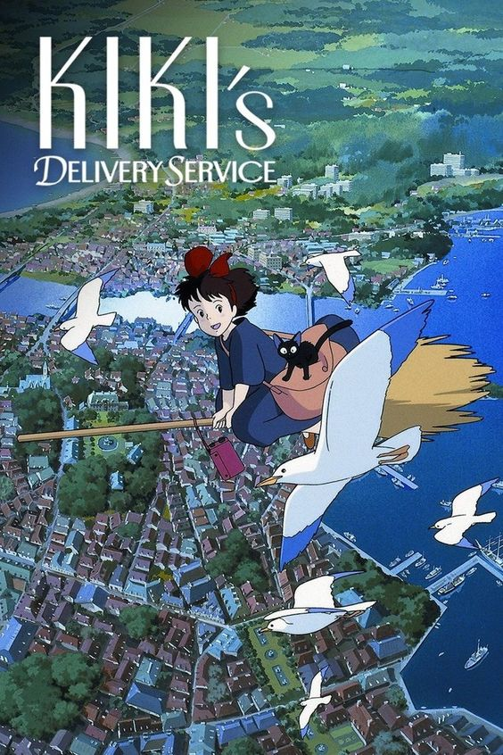
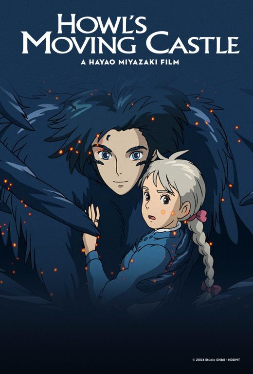
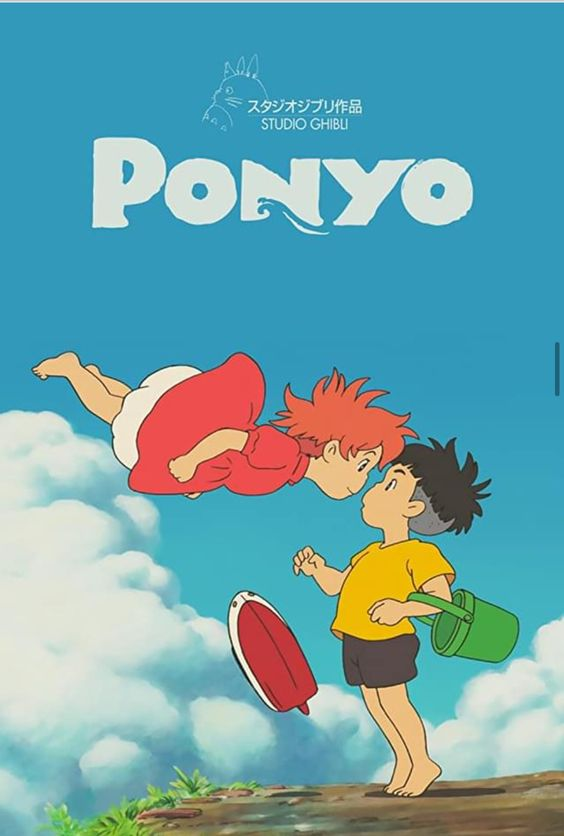

My Neighbor Totoro is a 1988 Japanese animated fantasy film written and directed by Hayao Miyazaki and animated by Studio Ghibli. The story is about two girls named Satsuki and Mei who moved to a new home due to their sick mother. The house they moved in seemed normal at first but little did they know that there would be mystical cratures that will lead them to see the world in a different light
Spirited Away is a classic 1989 Studio Ghibli masterpiece directed by Hayao Miyazakiand and produced by Studio Ghibli. This movie is one of studio ghiblis well known films. It is a story of a girl named Chihiro who finds her way into a different world full of creatures. A guy named Haku helps her throughout her journey as she tries to find her way home.
Kiki's Delivery Service is a 1989 Japanese animated fantasy film written, produced, and directed by Hayao Miyazaki and produced by Studio Ghibli. This story focuses on Kikis life story where she finds out sho she really is and learnds how to love herself. Kiki left her hometown ar an early age to compete her witch training and in that journey she finds a job in which helps her settle in a new town. It is a hearwarming story for those who enjoy going through a journey of self discovery
Back to topHowl's Moving Castle is a 2004 Japanese animated fantasy film written and directed by Hayao Miyazaki and produced by Studio Ghibli. It is a story of a girl named Sophie who was cursed to transform into an old lady by a witch. Along her journey, she meets a man named Howl who lives in a strange moving castle. She comes along with him as they try to find a cure not just for her but the other curses she discovers along her way.
Back to topPonyo is a 2008 Japanese animated fantasy film written and directed by Hayao Miyazaki and produced by Studio Ghibli that won an a cademy prize for animation of the year in 2009. The story is about a girl named Ponyo who was rescued by a guy named Sousuke who didnt know at the time what he was getting himself into. Ponyo is a goldfish that grew into a human due to her strong connection with the friend she had made with them and her journey cntinues on
Back to topTonari no Totoro. (n.d.).MyAnimeList.net. https://myanimelist.net/anime/523/Tonari_no_Totoro.
Sen to Chihiro no Kamikakushi. (n.d.).MyAnimeList.net. https://myanimelist.net/anime/199/Sen_to_Chihiro_no_Kamikakushi
Majo no Takkyuubin. (n.d.).MyAnimeList.net. https://myanimelist.net/anime/512/Majo_no_Takkyuubin
Howl no Ugoku Shiro. (n.d.).MyAnimeList.net. https://myanimelist.net/anime/431/Howl_no_Ugoku_Shiro
Gake no Ue no Ponyo. (n.d.). MyAnimeList.net. https://myanimelist.net/anime/2890/Gake_no_Ue_no_Ponyo?q=ponyo&cat=anime